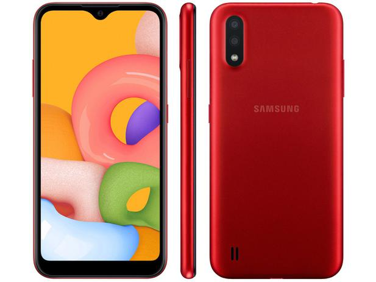
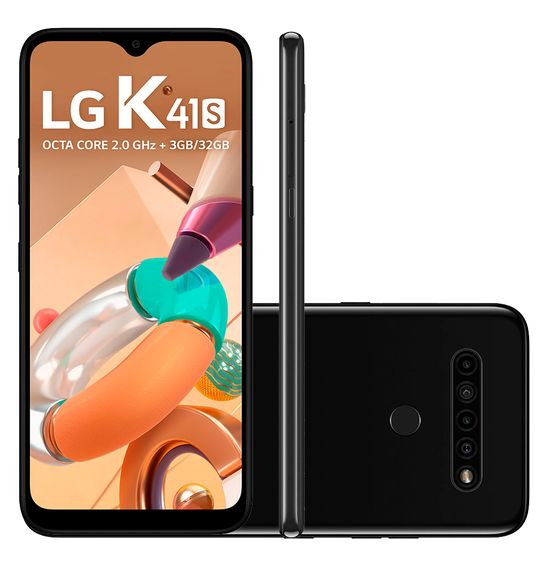
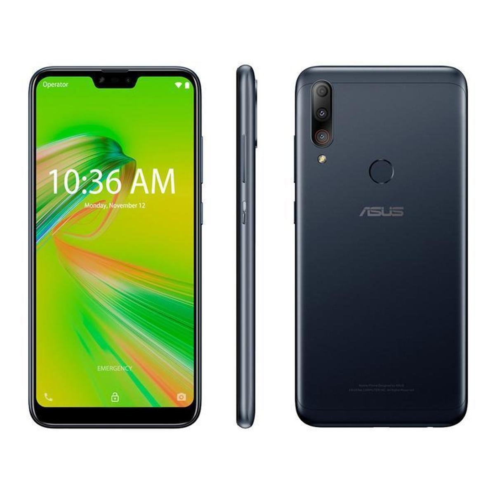
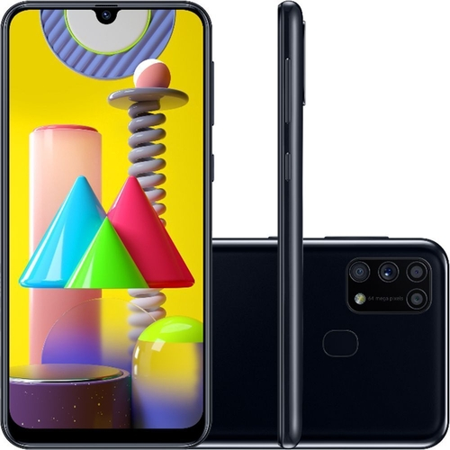
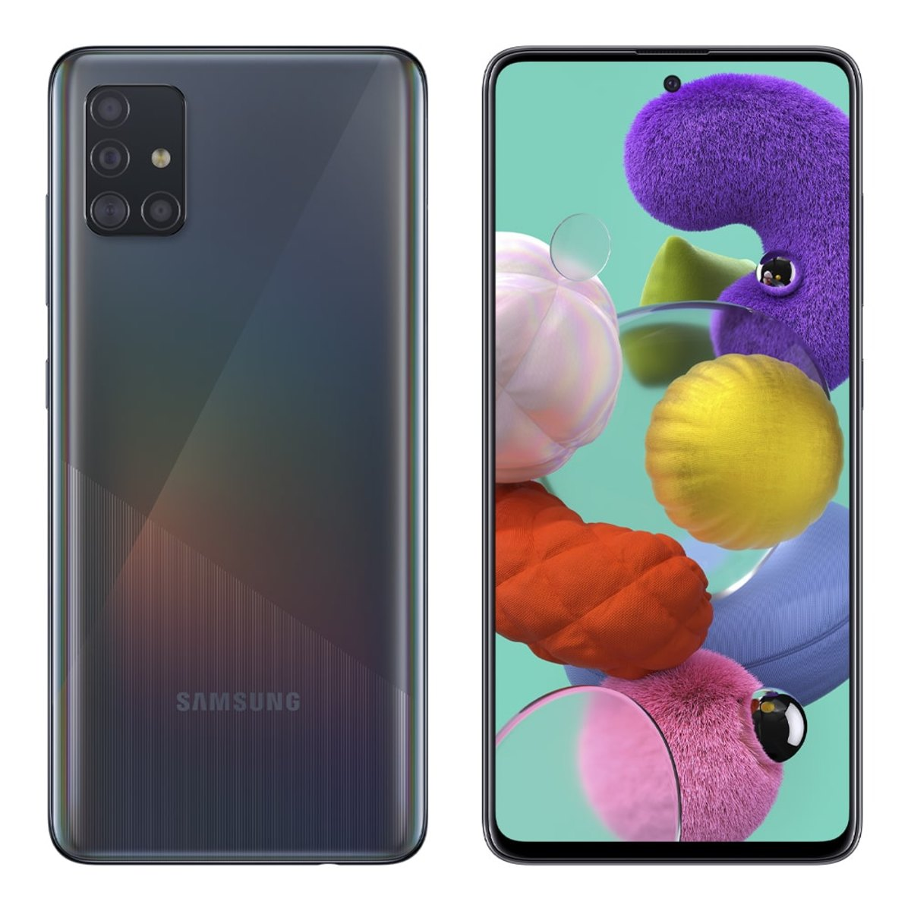
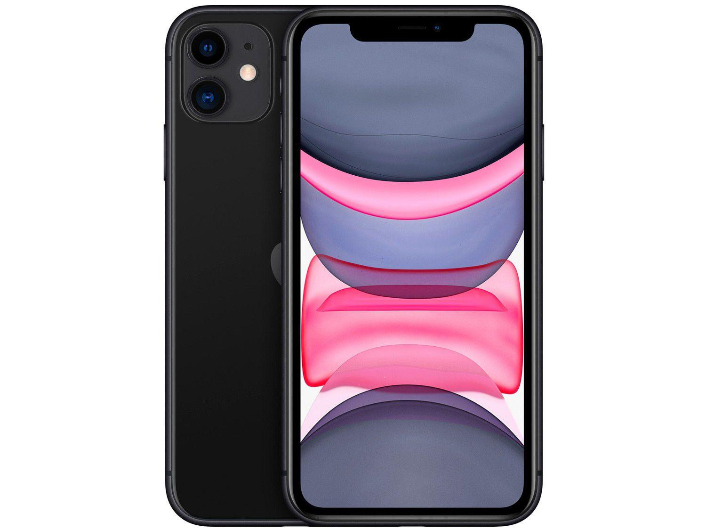
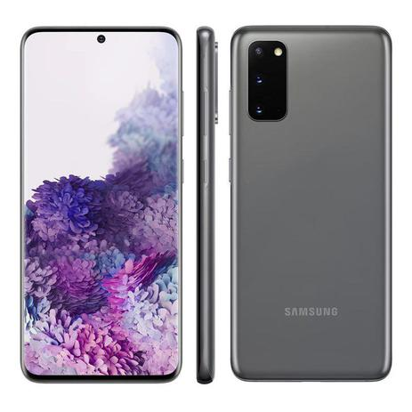
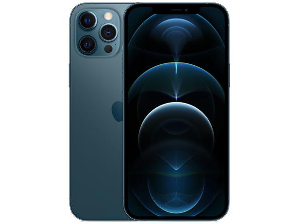

melhores celulares em 2021
como avaliamos os celulares?
nem sempre o celular mais potente vai ser o melhor pra você.
É natural que os melhores celulares sejam os tops de linha, que oferecem maior variedade de recursos e ótimo desempenho. No entanto, nem sempre esses modelos se encaixam dentro das necessidades e orçamentos de todos os usuários.
Então separei os melhores celulares por faixa de preço
melhores celulares ate R$ 1.000
galaxy A01

o A01 é um celular mais basico. Isso não significa que eles sejam aparelhos ruins, mas sim que oferecem uma ficha técnica mais simples e, consequentemente, são mais baratos. São bons modelos para o uso no dia a dia com apps leves.
ficha tecnica do galaxy A01
Tela: 5,7 polegadas com resolução HD+
Processador: Snapdragon 439 octa-core de até 1,95 GHz
Memória RAM: 2 GB
Armazenamento interno: 32 GB (expansível via microSD)
Câmeras traseiras: 13 MP + 2 MP (sensor de profundidade)
Câmera frontal: 5 MP
Bateria: 3.000 mAh
LG K41S

Outro modelo baratinho entre os melhores celulares de 2021 é o LG K41S, que se destaca por ter um conjunto quádruplo de câmera. A principal tem 13 MP e foco automático por detecção de fase; a segunda tem 5 MP com lente ultra-wide, para fotos com enquadramento maior; a terceira conta com 2 MP e lente macro, que tira imagens ricas em detalhes quando o objeto está próximo; e a quarta também tem 2 MP e é usada para o efeito de desfoque no modo retrato.
ficha tecnica LG K41S
Tela: 6,55 polegadas HD+ (720 x 1600) e tecnologia IPS
Processador: Mediatek MT6762 octa-core de até 2,2 GHz
Memória RAM: 3 GB
Armazenamento interno: 32 GB (expansível via microSD)
Câmera traseira: 13 MP + 5 MP (ultra-wide) + 2 MP (macro) + 2 MP (sensor de profundidade)
Câmera frontal: 8 MP
Bateria: 4.000 mAh
Asus Zenfone Max Shot

Entre os melhores celulares baratos, o Zenfone Max Shot é um dos poucos que possui tela com alta qualidade. A deste modelo tem 6,26 polegadas e conta com resolução Full HD, excelente para quem gosta de assistir a vídeos no celular. Com os 64 GB de armazenamento interno, o usuário pode salvar diversos apps, fotos e outros arquivos.
ficha tecnica Asus Zenfone max shot
Tela: 6,26 polegadas com resolução Full
Processador: Snapdragon SiP 1 octa-core de até 1,8 GHz
Memória RAM: 4 GB
Armazenamento interno: 64 GB (expansível)
Câmeras traseiras: 12 MP + 8 MP (ultra-wide) + 5 MP (sensor de profundidade)
Câmera frontal: 8 MP
Bateria: 4.000 mAh
melhores celulares ate R$ 2.500
samsung galaxy M31

O Galaxy M31 foi o primeiro celular intermediário aqui no Brasil a ter uma bateria de 6.000 mAh, cuja autonomia chega a dois dias sem muito esforço. O carregamento rápido o ajuda a ficar menos tempo na tomada, mesmo tendo essa bateria "gigante". Parte da boa eficiência energética vem do Exynos 9611, processador potente o suficiente para uso no dia a dia sem travamentos.
ficha tecnica samsung galaxy M31
Tela: 6,4 polegadas com resolução Full HD+
Processador: Exynos 9611 octa-core de ate 2,3 GHz
Memória RAM: 6 GB
Armazenamento interno: 128 GB (expansível via microSD)
Câmeras traseiras: 64 MP + 8 MP (ultra-wide) + 5 MP (macro) + 5 MP (sensor de profundidade)
Câmera frontal: 32 MP
Bateria: 6.000 mAh com carregamento turbo de 15W
samsung galaxy A51

O Galaxy A51 foi um dos modelos mais populares em 2020 e continua sendo uma boa opção de compra em 2021, mesmo após o lançamento do Galaxy A52. Ele é um intermediário premium com ótimo custo-benefício, pois tem ficha técnica completa e preço justo, considerando tudo o que oferece.
ficha tecnica A51
Tela: 6,5 polegadas com resolução Full HD
Processador: Exynos 9611 octa-core de até 2,3 GHz
Memória RAM: 4 GB
Armazenamento interno: 128 GB (expansível via microSD)
Câmeras traseiras: 48 MP + 12 MP (ultra-wide) + 5 MP (macro) + 5 MP (sensor de profundidade)
Câmera rontal: 32 MP
bateria: 4.000 mAh com carregamento turbo de 15W
galaxy note 10 lite

O Galaxy Note 10 Lite é excelente para quem não sabe qual celular comprar, mas procura um dispositivo com preço mais acessível e suporte à S Pen, caneta inteligente da Samsung. Graças ao processador Exynos 9810, você pode usar diversos apps, fazer anotações de reuniões, desenhos e até controlar algumas funções pela caneta. Os 128 GB de armazenamento interno garantem espaço para armazenar todos os seus arquivos pessoais.
ficha tecnica note 10 lite
Tela: 6,7 polegadas com resolução Full HD+ e tecnologia AMOLED
Processador: Exynos 9810 octa-core de até 2,9 GHz
Memória RAM: 6 GB
Armazenamento interno: 128 GB (expansível via microSD)
Câmeras traseiras: 12 MP + 12 MP (teleobjetiva) + 12 MP (ultra-wide)
Câmera frontal: 32 MP
Bateria: 4.500 mAh com carregamento turbo de 15W
melhores ceulares acima de R$ 2.500
iphone 11

Apesar de ter sido lançado em 2019, o iPhone 11 continua entre os melhores celulares para 2021. Ele tem o melhor custo-benefício da linha 11, pois usa o mesmo processador dos modelos avançados, o Apple A13 Bionic. Além de um ótimo desempenho para o dia a dia, esse celular consegue rodar apps e jogos pesados sem problemas com travamento, graças a otimização do iOS 14, seu sistema operacional.
ficha tecnica iphone 11
Tela: 6,1 polegadas HD+ (828 x 1792) e tecnologia Retina
Processador: Apple A13 Bionic hexa-core
Memória RAM: 4 GB
Armazenamento interno: 64 GB
Câmeras traseiras: 12 MP + 12 MP (ultra-wide)
Câmera frontal: 12 MP
Bateria: 3.110 mAh com carregamento turbo
samsung s20

Se procura por celulares bons, mas não quer gastar tanto investindo no top de linha de 2021, pode apostar no Galaxy S20, modelo premium da Samsung em 2020. Apesar de ser a versão convencional, ele possui o mesmo processador do modelo Plus e Ultra, o Exynos 990. Você pode rodar desde apps até jogos pesados, isso tudo com bom desempenho e sem travamentos, já que o celular possui incríveis 8 GB de memória RAM.
ficha tecnica samsung s20
Tela boa de 6,2 polegadas 2K (1440 x 3040) e 120 Hz de taxa de atualização que deixa imagens mais fluidas;
Processador Exynos 990 que, com memória RAM de 8GB, roda bem apps e jogos pesados;
Gravações em vídeo em 8K na traseira e 4K na frontal;
A bateria é de 4.000 mAh, mas conta com carregamento turbo.
iphone 12

A linha iPhone 12 é a mais recente da Apple e conta com quatro aparelhos diferentes. O iPhone 12 é o convencional, mas não se deixe enganar, pois ele usa o mesmo processador dos modelos mais potentes. O Apple A14 Bionic foi o primeiro produzido com tecnologia de 5 nanômetros, que o torna mais rápido e econômico. Mesmo lançado ano passado, ele é um dos melhores celulares para comprar em 2021.
ficha tecnica iphone 12
Tela de 6,1 polegadas, com tecnologia XDR OLED Retina, HDR10, True Tone, dolby vision, brilho de 1200 Nits e resolução de 1170 x 2532 pixels. Excelente para ver vídeos;
Processador potente Apple A14 Bionic junto com memória RAM de 4 GB;
Armazenamento interno em três versões de 64 GB, 128 GB ou 256 GB;
Boa qualidade de fotos com ótimo pós-processamento e modo noturno aprimorado. Câmeras traseiras de 12 MP + 12 MP (ultra-wide). Câmera frontal de 12 MP que traz bom resultado em selfies;
Bateria para até 17 horas de autonomia em reprodução de vídeo.